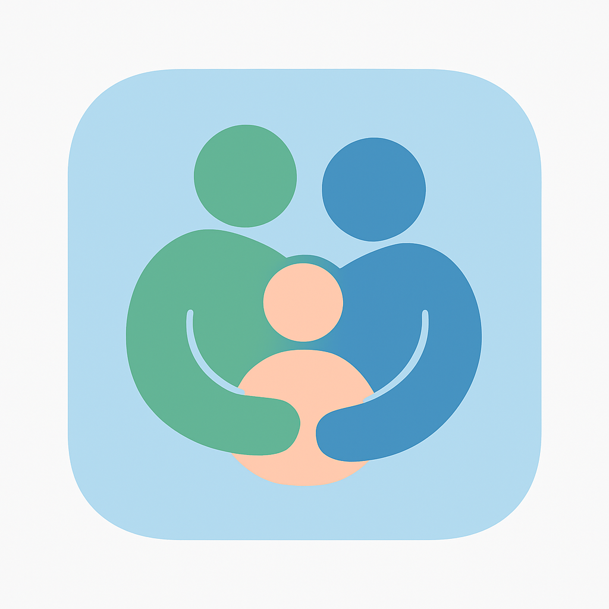

Adebiyi Adegboye.
I build platforms. I lead teams.
I keep complex systems running.
Platform Engineering Team Lead with 8+ years in cloud, DevOps, and Kubernetes. AWS, Azure, and engineering leadership.
−30% deployment time−75% manual configuration−20% cloud costs
Play the games, find the secrets, visit every service. Achievements unlock as you go.
The rollout
so far.
8+ years of building software, evolving platforms,
and leading the teams that deliver them. Pick a release.
Platform Engineering Team Lead
Senior Cloud Engineer · FEB 2023 — AUG 2024Platform Engineering Team Lead · SEP 2024 — PRESENT
Joined in Feb 2023 as a Senior Cloud Engineer at Alveo Technology, which merged into Gresham in 2024, and stepped up to Team Lead in Sep 2024. Today I lead platform capability and enterprise delivery across managed-services and customer-hosted environments, spanning AWS, Azure, OpenShift, and Kubernetes.
- Lead two engineers, set priorities, mentor, and review designs.
- Led a phased on-premises-to-cloud migration for an enterprise customer: 19 core services and 24 microservices across 10 environments, with a weekend cutover and no issues on day one.
- Own architecture, delivery patterns, and complex production diagnosis.
- As Senior Cloud Engineer: cut deployment time by 30% (GitOps, CI/CD), manual configuration by 75% (Helm), and cloud costs by 20% (Kubecost).
Read the full release history ＋
Hands on.
People focused.
I’m Adebiyi, a Platform Engineering Team Lead based in London, with 8+ years in cloud, DevOps, and Kubernetes. I work where cloud architecture, distributed systems, and engineering leadership meet.
My strongest cloud depth is in AWS and EKS, alongside end-to-end Azure and AKS delivery. I enjoy turning ambiguous requirements into platforms that teams can operate with confidence.
Today at Gresham, that means leading engineers, shaping platform strategy, working with enterprise customers, and staying close to production. I also work with agentic AI as part of platform automation, and I’m most interested in the infrastructure that lets it run reliably in production.
Find me on LinkedIn ↗CloudAWS · Azure · EKS · AKS
Multi-cloud and Kubernetes architecture across AWS, Azure, Red Hat OpenShift, ROSA, private cloud, and on-premises estates, including networking, storage, identity, and security.
PlatformTerraform · Helm · Argo CD · GitOps
Reusable infrastructure, consistent deployments, and clear release practices. Kubernetes, Docker, Istio, Ansible, Jenkins, and CI/CD connect the platform to the engineering workflow, with agentic AI joining the automation toolkit.
OperationsReliability · Observability · Incident response
Hands-on diagnosis across applications, Kubernetes, networking, storage, Kafka, and Cassandra. Prometheus, Grafana, Datadog, ELK, and Kubecost help make performance and cost visible.
LeadershipPeople · Delivery · Customers
Team priorities, mentoring, design reviews, hiring, technical interviews, customer delivery, and stakeholder communication. Building capability that lasts beyond a single specialist.
Complex systems.
Real ownership.
Four deployments from architecture to production.
Open one to read the runbook.
deployment time
manual configuration
cloud costs
MEASURED IMPACT
SENIOR CLOUD ENGINEER · 2023–2024
Parenting works
better together.
Alongside my platform work, we’re building Together Parenting — an app to help families keep everyday care, development, and shared caregiving connected.
From sleep and feeding to growth and milestones, we’re bringing the moving parts of family life into one shared place.

Traffic router.
Keep it flowing.
Requests are coming in. Set the route to send each one
to the right namespace before it hits the load balancer.
Routing to Cloud. Waiting for the first request.
The platform
janitor.
I come in quietly, clean things up, set up self-healing systems, and leave things better than I found them. Legacy Terraform state, forgotten Helm releases, half-migrated secrets: the messes others avoid.
My work is driven by laziness in its best form: build things once, make them reliable, and let them run with minimal babysitting.
- Automation > repetition
- Processes that trust people
- Stable over shiny
- Low ego, high ownership
“DevOps isn’t about tools. It’s about discipline, empathy, and connecting people with systems that actually work.”
Every tool.
Its own pod.
Grab a pod and throw it. Scale it up, set the chaos
monkey loose, or tap a pod to see where I use it.
MSc Advanced Computer Science
Leeds Beckett University
BSc Hydrology
University of Agriculture, Abeokuta
Solutions Architect
Amazon Web Services
Developer
Amazon Web Services
Terraform Associate
Infrastructure as code
No tickets.
Self-serve.
The best platforms let people get what they need without raising a ticket. This one works the same way.
Choose what you’re hiring or building for. I’ll provision the evidence as a manifest, ready to apply.
Choose a template · Provision · Apply
# Choose a template, then press Provision.
You’ve reached egress.
Let’s open a connection.
Cloud platforms, engineering teams, or a complex delivery challenge. Let’s talk platforms.
Say hello